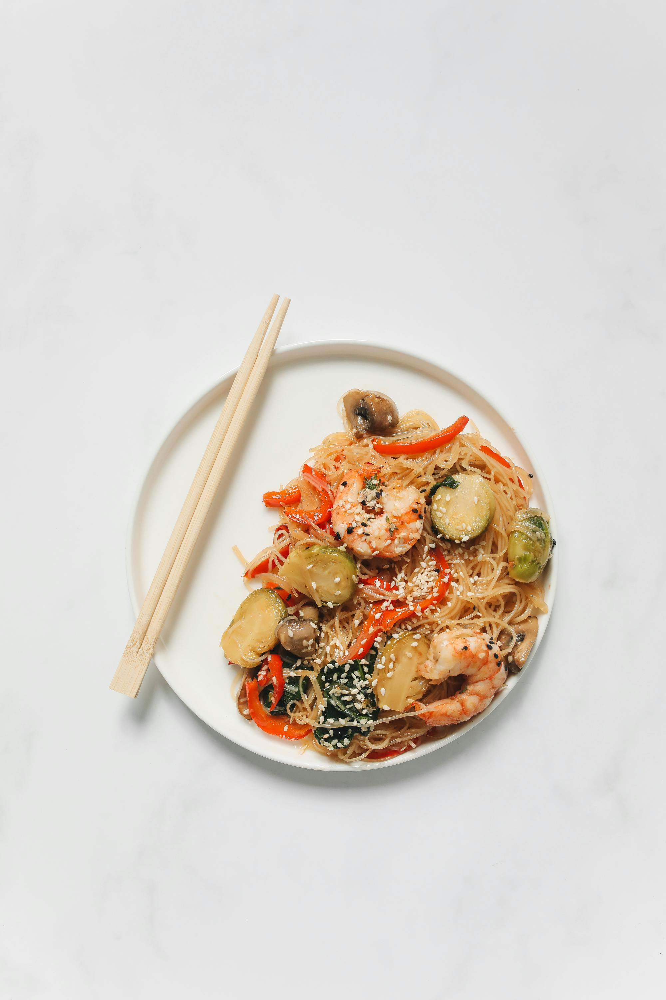
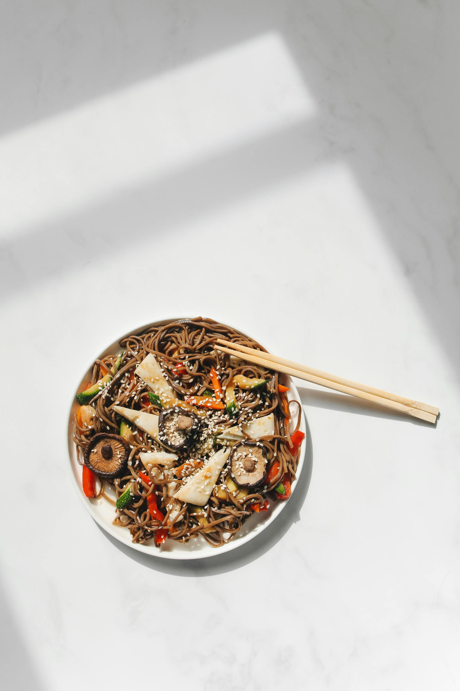

SEAFOOD NOODLES

Seafood noodles are a delectable dish featuring a combination of various seafood, such as shrimp, squid, and fish, served over or mixed with noodles. Typically flavored with savory sauces, herbs, and spices, this dish can be prepared in various styles, including stir-fried, in soups, or as cold salads. Seafood noodles are popular in many cuisines around the world, offering a delightful blend of flavors and textures that highlight the freshness of the ocean's bounty.
Read More
SOY SAUCE & MUSHROOM NOODLES

Soy sauce and mushroom noodles are a flavorful dish made from stir-fried or boiled noodles tossed in a savory soy sauce, complemented by sautéed mushrooms. The dish often incorporates garlic, green onions, and various vegetables, creating a rich umami taste. It's a quick and satisfying meal that can be enjoyed on its own or as a side dish. The combination of earthy mushrooms with the salty soy sauce enhances the noodles, making it a popular choice for both vegetarian and non-vegetarian diets.
Read More